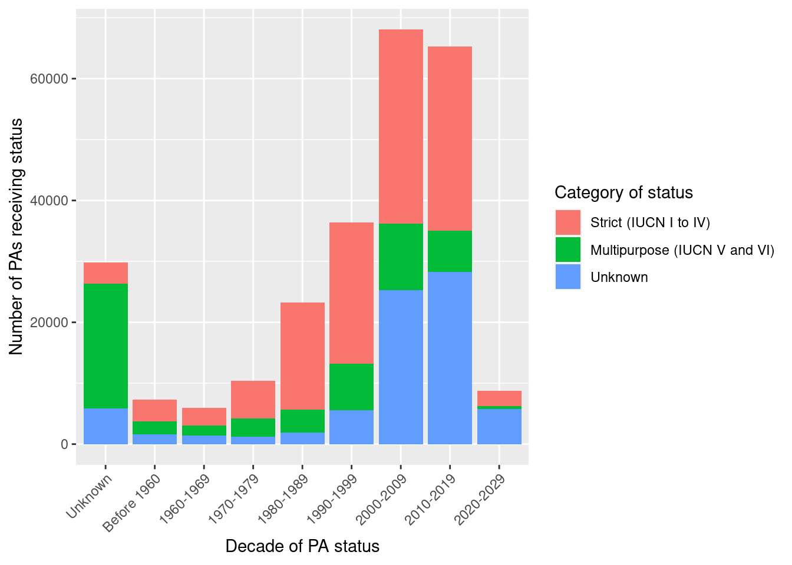
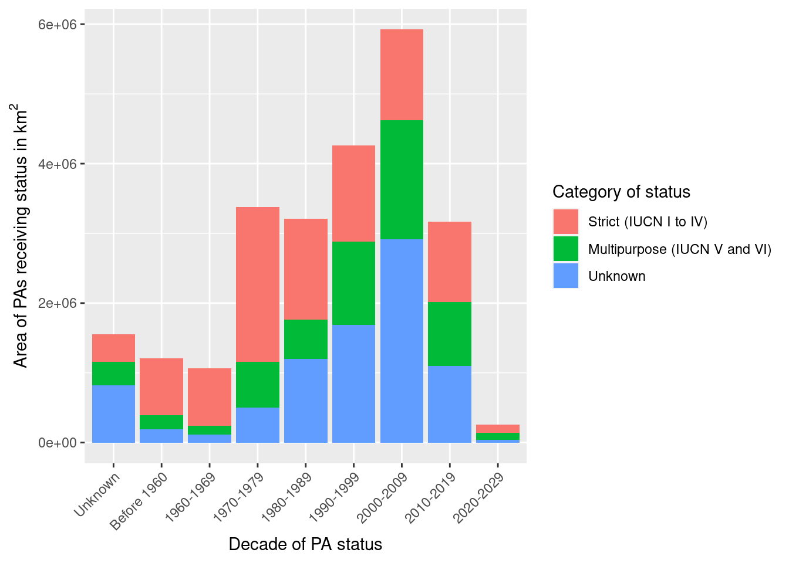
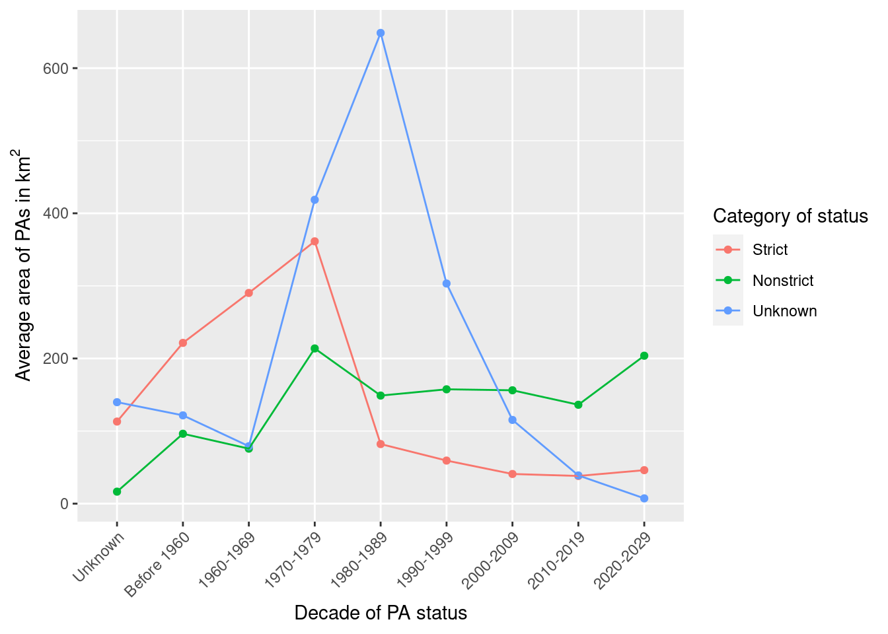

We analyse the world database on protected areas to assess if the relative importance of multipurpose protected areas has evolved compared to strictly protected areas. We show very different trends whether we focus on the number of entities or the spatial coverage of protected areas. During the last decades, there has been an increasing number of smaller strictly protected areas, and a decreasing number of larger multipurpose protected areas.
Objective
In the framework of a paper in preparation (Fromont et al. 2023), we want to know if the share of multi-purpose protected areas is increasing, compared to protected areas pursuing only conservation objectives. This document is designed to provide a verifiable and reproducible answer to this question. It is written in quarto and uses R code. All the data processing can be viewed by clicking on the “code” buttons.
Code
# Install required libraries.# Specified the used packagesrequired_packages <-c("tidyverse", "aws.s3", "wdpar", "sf", "gt", "rgee") # Identify which are missingmissing <-!(required_packages %in%installed.packages())# Install thoseif(any(missing)) install.packages(required_packages[missing], repos ="https://cran.irsn.fr/")# Load librarieslibrary(tidyverse)library(aws.s3)library(wdpar)library(sf)library(gt)# Turn on/off scientific notationsoptions(scipen =0) #999 for off
Data
We use the extension wdpar to fetch the World Database on Protected Areas from the protected planet portal. It is the version updated in February 2022. We only keep the areas for which a spatial area is known, that is not including the protected area for which only one point in space is reported.
Code
# we also get the WDPA version from Google Earth Engine that includes areas save_object(object ="Replication_wolf/WDPA_no_geom_Feb2022.csv",file ="WDPA_no_geom_Feb2022.csv",bucket ="fbedecarrats",region ="")# # For first download, use this code: # wdpa <- wdpa_fetch("global", download_dir = ".")# # to save to S3 this one:# put_object(file = "WDPA_Jan2023_Public.gdb.zip",# object = "Replication_wolf/WDPA_Jan2023_Public.gdb.zip",# bucket = "fbedecarrats",# region = "")# # for more info on the use of S3 in this context, see: # # https://www.book.utilitr.org/01_r_insee/fiche_utiliser_rstudio_sspcloud# Read the data# wdpa <- wdpa_read("WDPA_Jan2023_Public.gdb.zip")# This one was generated from Google Earth Engine to get the GIS areawdpa_gee <-read_csv("WDPA_no_geom_Feb2022.csv")
As of this date, the WDPA includes information on rnrow(wdpa_gee) protected areas. A well-formatted description of the fields available can be found on this webpage.
Methods
We keep only terrestrial protected areas and discard marine or coastal protected areas. Following Nelson et al. (2011), we classify as strict protection the protected areas with a status corresponding to IUCN classes I through IV, and as multipurpose the protected areas with status corresponding to IUCN classes V and VI.
For now, we have not figured out how to specify indigenous stewardship, so we leave it among the Unknown.
Code
# Drop marine, compute decadewdpa2 <- wdpa_gee %>%filter(MARINE =="0") %>%#0: 100% terrestrial, 1: both, 2: 100% marinemutate(decade = STATUS_YR - (STATUS_YR %%10),decade =case_when( decade ==0~"Unknown", decade >0& decade <=1950~"Before 1960",.default =paste(decade, decade+9, sep ="-")),type =ifelse(IUCN_CAT %in%c("Ia", "Ib", "II", "III", "IV"), "Strict",ifelse(IUCN_CAT %in%c("V", "VI"), "Nonstrict", "Unknown")))# Organize the order of display of decades, starting with Unnkown, then Beforedecades <- wdpa2 %>%pluck("decade") %>%unique() %>%sort()order_decades <-c("Unknown", "Before 1960", str_subset(decades, "^[0-9]")) wdpa2 <- wdpa2 %>%mutate(decade =factor(decade, levels = order_decades))
After this filtering, we have 255246 protected areas for the analysis.
Results
Relative importance of status in number of PAs
Figure 1 represents the evolution of strict vs. multipurpose categories according to the year of assignment of the conservation status of PAs.
Code
# Descriptive statisticspatype_decade <- wdpa2 %>%group_by(decade, type) %>%summarise(n =n(),area =sum(GIS_AREA, na.rm =TRUE),mean_area =mean(GIS_AREA, na.rm =TRUE)) %>%ungroup() %>%mutate(type =factor(type, levels =c("Strict", "Nonstrict", "Unknown")))patype_decade %>%ggplot(aes(x = decade, y = n, fill = type)) +geom_col() +xlab("Decade of PA status") +ylab("Number of PAs receiving status") +labs(fill ="Category of status") +scale_fill_discrete(labels =c("Strict"="Strict (IUCN I to IV)","Nonstrict"="Multipurpose (IUCN V and VI)")) +theme(axis.text.x =element_text(angle =45, hjust=1))

Figure 1: Number of terrestrial protected areas by status and decade of creation
The Figure 1 shows that the total number of PAs has sharply increased since 2000. However, the relative importance of multipurpose conservation status doesn’t seem to increase.
Code
# Stats in number of PAsprop_patype_decade <- patype_decade %>%select(-area, -mean_area) %>%pivot_wider(names_from = type, values_from = n) %>%mutate(total = Nonstrict + Strict + Unknown,known_status = Nonstrict + Strict,perc_nonstrict =round(Nonstrict / known_status *100, 1))# Let's re-order colunmsprop_patype_decade %>%rename(`Decade of status assignment`= decade,`Total number of PAs created`= total,`Number of PAs whith a known status`= known_status,`% of multipurpose among known status`= perc_nonstrict) %>%gt()
Area of PAs by status category and decade of creation
Decade of status assignment
Nonstrict
Strict
Unknown
Total number of PAs created
Number of PAs whith a known status
% of multipurpose among known status
Unknown
20486
3499
5850
29835
23985
85.4
Before 1960
2118
3658
1568
7344
5776
36.7
1960-1969
1639
2848
1446
5933
4487
36.5
1970-1979
3068
6146
1190
10404
9214
33.3
1980-1989
3784
17660
1851
23295
21444
17.6
1990-1999
7589
23191
5573
36353
30780
24.7
2000-2009
10972
31885
25239
68096
42857
25.6
2010-2019
6729
30189
28314
65232
36918
18.2
2020-2029
494
2542
5718
8754
3036
16.3
According to the world database on protected areas, the proportion of new protected areas with a multipurpose status has reduced, from 36.5% in the 1960s to 18.2% in the 2010s. It has been even lower (16.3%) in the first years of the current decade.
We must, however, strikeout that the decade of creation is unknown for 29835 out of 255246 protected area ( 11.7%). There is a large proportion of multipurpose status among the protected areas for which the creation date is unknown (85.4%). The status of the protected area is unknown for 76749 protected areas out of 255246 protected areas (30.1%).
Relative importance of status in PA spatial extent
We now perform the same analysis, but instead of counting the number of PAs, we sum their area. The area newly covered by type of status is represented in Figure 2.
Code
patype_decade %>%ggplot(aes(x = decade, y = area, fill = type)) +geom_col() +xlab("Decade of PA status") +ylab(bquote('Area of PAs receiving status in km'^2)) +labs(fill ="Category of status") +scale_fill_discrete(labels =c("Strict"="Strict (IUCN I to IV)","Nonstrict"="Multipurpose (IUCN V and VI)")) +theme(axis.text.x =element_text(angle =45, hjust=1))

Figure 2: Area of terrestrial protected areas by status and decade of creation
The trend that appears in Figure 2 is quite different than the one we saw in Figure 1: when accounting for their total areas, multi-purpose protected areas seem to represent an increasing proportion among newly created protected areas.
We now compute the precise area estimates and their relative importance.
Code
# Stats in number of PAsprop_patype_decade_area <- patype_decade %>%select(-n, -mean_area) %>%pivot_wider(names_from = type, values_from = area) %>%mutate(total = Nonstrict + Strict + Unknown,known_status = Nonstrict + Strict,perc_nonstrict =round(Nonstrict / known_status *100, 1))# Let's re-order colunmsprop_patype_decade_area %>%rename(`Decade of status assignment`= decade,`Total area of PAs created`= total,`Area of PAs whith a known status`= known_status,`% of multipurpose among known status`= perc_nonstrict) %>%gt()
Area of terrestrial protected areas by status and decade of creation
Decade of status assignment
Nonstrict
Strict
Unknown
Total area of PAs created
Area of PAs whith a known status
% of multipurpose among known status
Unknown
338497.5
395721.7
817816.01
1552035.2
734219.2
46.1
Before 1960
203971.6
810165.7
190733.46
1204870.8
1014137.3
20.1
1960-1969
124182.8
826734.0
114394.02
1065310.8
950916.8
13.1
1970-1979
655964.9
2221082.8
498173.11
3375220.7
2877047.6
22.8
1980-1989
563488.1
1449478.8
1200396.70
3213363.6
2012966.9
28.0
1990-1999
1195525.0
1376105.3
1690133.69
4261764.0
2571630.3
46.5
2000-2009
1713561.7
1302895.9
2911189.26
5927646.9
3016457.6
56.8
2010-2019
916777.5
1151556.7
1100412.15
3168746.4
2068334.2
44.3
2020-2029
100677.9
117277.1
41600.39
259555.4
217955.0
46.2
According to the world database on protected areas, the total spatial extent of new protected areas with a multipurpose status has increased, from 13.1% in the 1960s to 56.8% in the 2000s and slightly decreased in the 2010s to 44.3%.
Average size of protected areas
The two previous figures suggest very different trends in terms of average size of protected areas depending on their status. We verify this with Figure 3.
Code
patype_decade %>%ggplot(aes(x = decade, y = mean_area, group = type, col = type)) +geom_point() +geom_line() +xlab("Decade of PA status") +ylab(bquote('Average area of PAs in km'^2)) +labs(col ="Category of status") +scale_fill_discrete(labels =c("Strict"="Strict (IUCN I to IV)","Nonstrict"="Multipurpose (IUCN V and VI)")) +theme(axis.text.x =element_text(angle =45, hjust=1))

Figure 3: Average area of terrestrial protected areas by status and decade of creation
Figure 3 shows that the area of PAs with a strict status has decreased over time, while the area of PAs with a multipurpose status has increased over time.
Conclusion
The information available in the world database on protected areas indicates that in terms of number of administrative entities, the proportion protected areas with a multi-purpose status tends to decrease over the last decades. However, in terms of spatial extent of these entities,the proportion of protected area with a multi-purpose status tends to increase over the same period. In other words, countries create an increasing number of smaller strictly protected areas, and they create a decreasing number of larger multi-purpose protected areas.
This conclusion, however, could be undermined by the substantial proportion of missing information on the creation date and status of protected areas in the database of reference.
References
Fromont, Céline, Stéphanie M. Carrière, Florent Bédécarrats, and Other Coauthors. 2023. “Socio-Environmental Monitoring as a Constant Weak Point of PAs in Developing Countries: Literature Review and Recommendations.”To Be Determined.
Nelson, Andrew, and Kenneth M. Chomitz. 2011. “Effectiveness of Strict Vs. Multiple Use Protected Areas in Reducing Tropical Forest Fires: A Global Analysis Using Matching Methods.” Edited by Hans Henrik Bruun. PLoS ONE 6 (8): e22722. https://doi.org/10.1371/journal.pone.0022722.